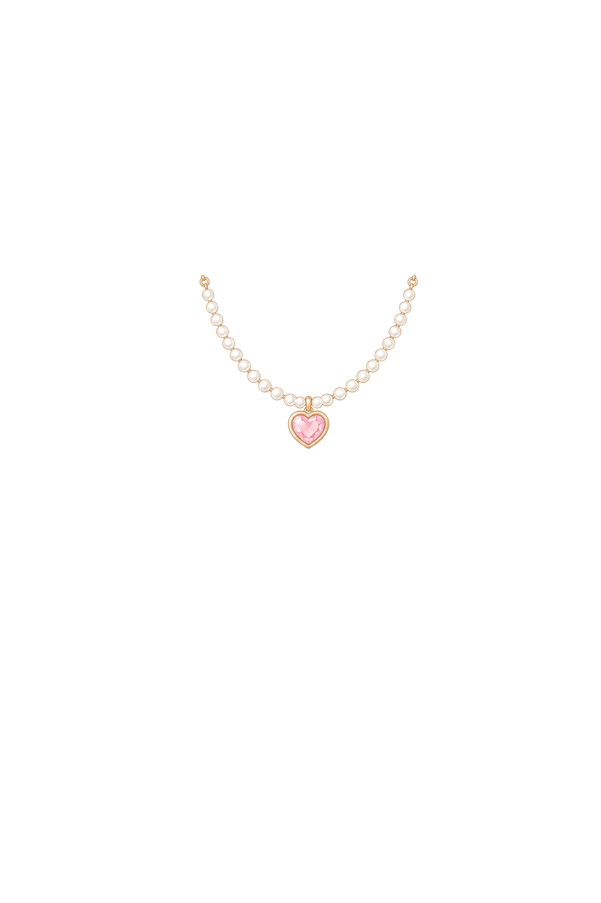
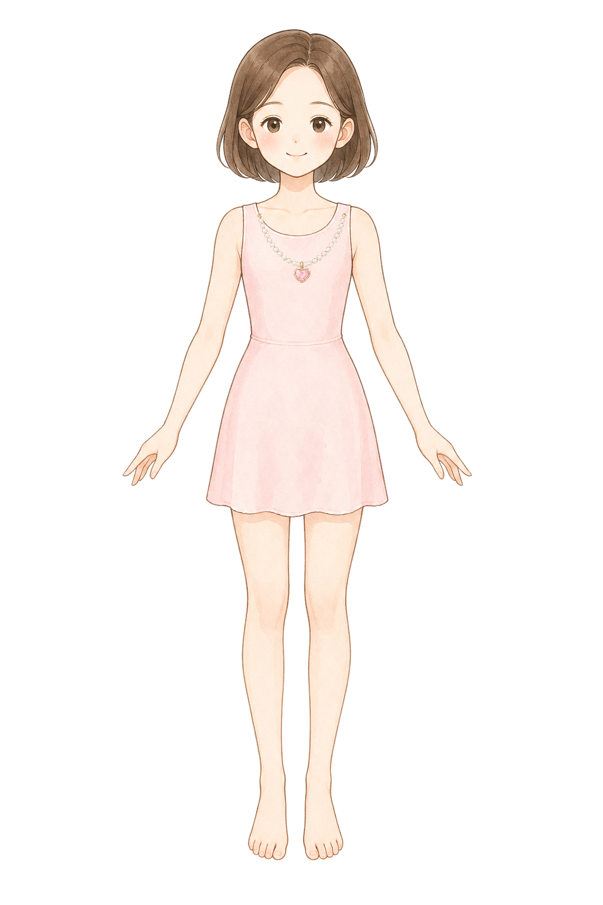
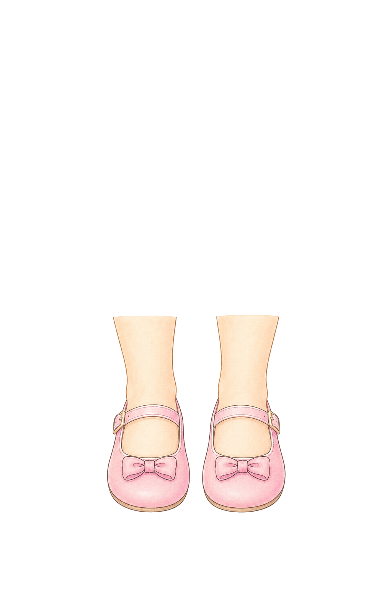
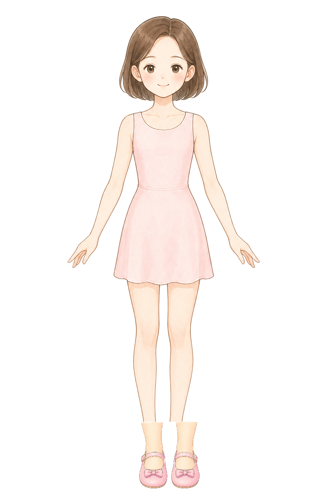

Base: style-d-encyclopedia-clean-base. Footwear uses a replacement patch: mask {"x":382,"y":1298,"width":280,"height":205}, then composite.
necklace
Necklace: symmetric heart pearl fit
ok
BaseCutout

NormalizedComposite

perfectly symmetrical small princess necklace layer for a children dress-up game, original pastel storybook encyclopedia illustration, soft watercolor-like coloring, clean fine linework, front view U-shaped pearl chain, left and right chain ends at exactly the same height, one tiny heart pendant exactly on the vertical center line, draw only the necklace and no body, no neck, no dress, no mannequin, pure white 1024 by 1536 canvas, place the pendant at canvas x 512 y 430 and keep the entire necklace inside x 410 to 614 and y 365 to 475, total width no more than 204 pixels, balanced and centered for a front-facing paper doll neckline, no earrings, no tiara, no text, no watermark
footwearPatch
Footwear patch: Mary Jane fit
ok
BaseCutout

Footwear patch normalizedMasked composite

footwear replacement patch for a children princess dress-up game, original pastel storybook encyclopedia illustration, soft watercolor-like coloring, clean fine linework, front view pair of lower ankles and feet wearing low pink Mary Jane flat shoes, draw the visible skin ankles above the shoes and the shoes covering toes naturally, draw only the lower ankles, feet, and shoes, no knees, no full legs, no dress, no body, no mannequin, pure white 1024 by 1536 canvas, place the patch near the bottom center: left ankle near x 456 y 1350 and left toe/shoe tip near x 450 y 1436, right ankle near x 568 y 1350 and right toe/shoe tip near x 572 y 1436, keep the complete replacement patch inside x 382 to 662 and y 1298 to 1503, maintain the same front-facing stance and spacing as a paper doll base, no text, no watermark